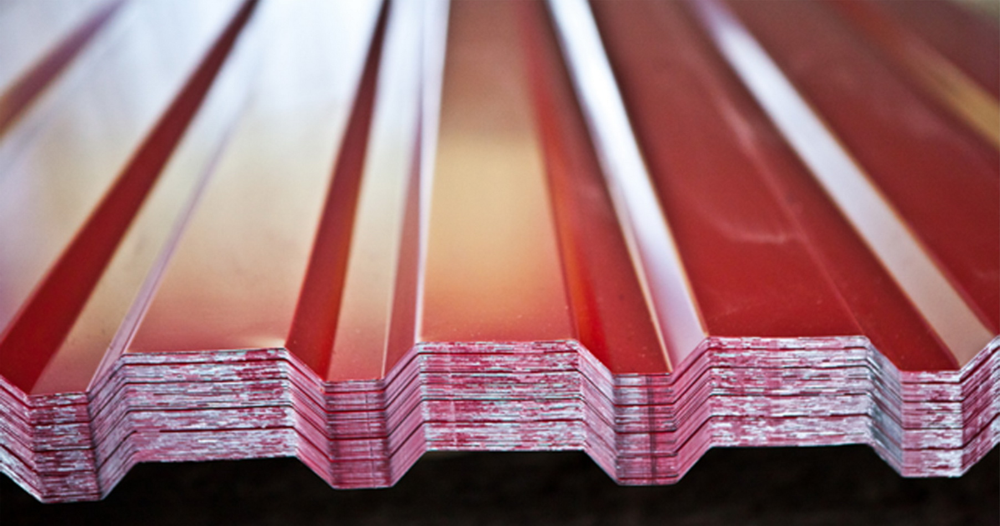
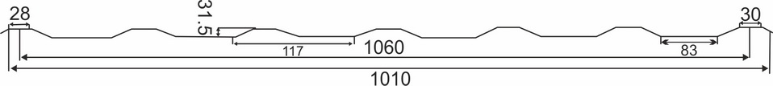
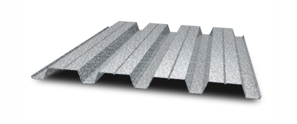
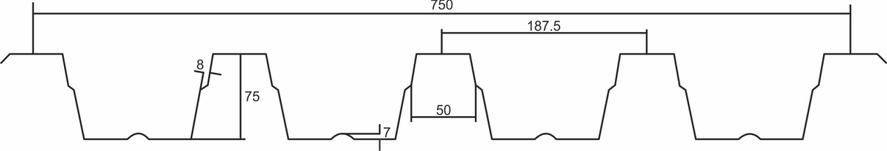

Профильный лист из окрашенной или оцинкованной стали незаменим в строительстве производственных сооружений, фермерских хозяйств, благоустройства территорий, внутренней и внешней отделки зданий. Основными достоинствами металлопрофиля являются: легкий вес, простота монтажа, долговечность,ценовая доступность, аккуратный внешний вид. Профнастил в различных вариациях высоты волны и толщины листа используется в качестве несущих кровельных конструкций, временных или постоянных ограждений, фасадной облицовки.
Запустив в 2015 году выпуск профилированного листа из стали с цинковым и полимерным покрытием, компания ПОТОКИ ГРУП динамично развивается как национальный производитель качественной продукции.
У нас можно купить профнастил следующих категорий:
1. Стеновой лист марок НС-20.
2. Кровельный несущий лист Н44, Н-57, Н-75.
3. Заборный лист С-8.
Тщательно отслеживая стандарты качества, мы используем для производства профильного листа сырье проверенных украинских и зарубежных производителей. Предлагая профнастил оптом, компания ПОТОКИ ГРУП снабжает застройщиков товаром на самых выгодных условиях.
Если вы хотите заручиться поддержкой надежного поставщика, решение купить профильный лист у нас, оправдает ваши надежды. Мы выполняем заказы:
• в согласованный срок;
• по конкурентной цене;
• с учетом пожеланий и требований заказчика.
В нашем каталоге представлен справочник по расцветкам для профлиста с полимерным цветным покрытием, схемы разновидностей профнастила.

толщина стали от 0,33 до 0,7 мм,
длина от 0,5 до 12 м.
Профнастил С-8
Полезная ширина гофролиста С-8 способствует экономичному использованию этого продукта для облицовки стен и установки заборов. Более того, востребованность данного материала основывается не только на его высокой прочности, но и его незаменимости при изготовлении перегородок и подвесных потолков в сэндвич панелях полистовой сборки.
толщина стали от 0,33 до 0,7 мм,
длина от 0,5 до 12 м.
Профнастил НС-20
Благодаря своим характеристикам, профнастил НС-20 входит в топ лучшей продукции по всей Украине. Благодаря сбалансированной геометрии касательно высоты и ширины, его можно применить в качестве стенового и кровельного гофролиста.
толщина стали от 0,33 до 0,8 мм,
длина от 0,5 до 12 м.
Профнастил НС-35
Наиболее подходящий материал для обустройства кровли и облицовки стен - профлист НС-35. Он был разработан как высокопрочный материал с повышенной долговечностью. Его геометрия идеально рассчитана для того, чтобы выносить немалые снеговые нагрузки при больших расстояниях между прогонами кровли.

толщина стали от 0,4 до 0,8 мм,
длина от 0,5 до 12 м.
Профнастил НС-44
Важная часть в строительстве больших промышленных объектов - профнастил, который способен выдержать большую нагрузку при больших количествах осадков и ветровой нагрузке. По этим характеристикам идеально подходит профролист НС-44 с большой высотой гофры и монтажной шириной, которые прекрасно сочетаются и создают собой высокопрочный продукт.

толщина стали от 0,45 до 1,0 мм,
длина от 0,5 до 12 м.
Профнастил Н-57
Этот многофункциональный профилированный лист может применяться в качестве кровельного материала, как постоянная опалубка и при бетонировании межэтажных перекрытий. Его высокая прочность и износостойкость позволяет использовать этот материал в производстве трехслойного кровельного пирога, включающий профлист, утепляющий материал и гидроизолирующий слой.
толщина стали от 0,45 до 1,0 мм,
длина от 0,5 до 12 м.
Профнастил Н-75
Этот продукт подходит для производства кровли промышленных зданий, строительства складских комплексов и т.д. Если вы запланировали бетонирование междуэтажных перекрытий, то данный материал сыграет незаменимую роль в качестве несъёмной опалубки.

Справочник по цветам
Нет
8017
3005
6005
5005
9003
9006
1015
Коррозионная стойкость и долговечность
Цинковое, полимерное покрытие защищает металл от воздействия атмосферы, вызывающей процессы окисления и появление ржавчины. Профлист с полимерным окрашиванием прекрасно противостоит коррозии в течение 25 лет эксплуатации, не уступая по сроку эксплуатации ондулину, металлочерепице или шиферу.
Оптимальная цена
Если вам нужна кровля или забор по умеренной стоимости, лучшего материала, чем профнастил не найти. Профилированный лист при отличном внешнем виде дешевле других кровельных и стеновых облицовочных материалов. Забор из оцинкованного или цветного профильного листа отлично выполняет оградительные и декоративные функции без высоких капиталовложений.
Пожаробезопасность
Профилированный оцинкованный лист не распространяет огонь и не поддерживает горение, поэтому применятся для зданий производственной, жилой и административной сферы.
Превосходное качество и экологичность
Для изготовления профлиста используется проверенное сырье отечественных и зарубежных производителей. Улучшенная формула полимерного покрытия позволяет применять цветной профнастил внутри и наружи жилых зданий.
Калькулятор веса и площади
1тип профлиста
(высота волны)
2длина профлиста
(от 0.5 до 12 м)
3общая ширина площади
для покрытия профлистом (м)
4толщина стали (мм)
количество листов
общая площадь листов (м2)
эффективная площадь покрытия (м2)
общий вес заказа (кг)
Результат
0
0
0
0
С 2006 года профнастил Potoki Group считается лучшим согласно ДСТУ. Это результат квалификации сотрудников, применения брендового немецкого оборудования и внедрения новых технологий производства. Мы знаем свое дело. Поэтому, ежегодно выполняем сотни заказов и всегда готовы принять ваш. Potoki Group - лидер по переработке листовой стали в Украине.
От качества профнастила зависит многое. Поэтому, профильный лист нашего производства имеет 4-х слойную комбинированную защиту от коррозии. А сам металл прокатывается на импортном немецком оборудовании. За качество листового металла отвечают проверенные временем партнеры. Мы можем производить до 80 000 метров профлиста в день. Заказывая у нас профнастил оптом, вы не переплачиваете магазинам и экономите до 20% ваших средств.
Ассортимент - один из приоритетов. Мы изготавливаем профнастил с 10-ю разными рисунками и в 16 расцветках. А выбор толщины металла от 0,33 мм до 1 мм позволяет купить профнастил для заборов, облицовки, кровли, опалубки и даже несущих конструкций.
Купить профильный лист у нас - получить сертифицированный товар. К тому же, мы готовы доставить его в любую точку Украины в кратчайший срок.